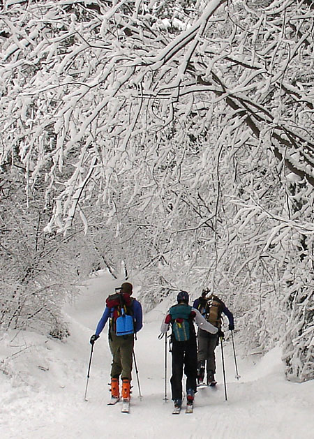
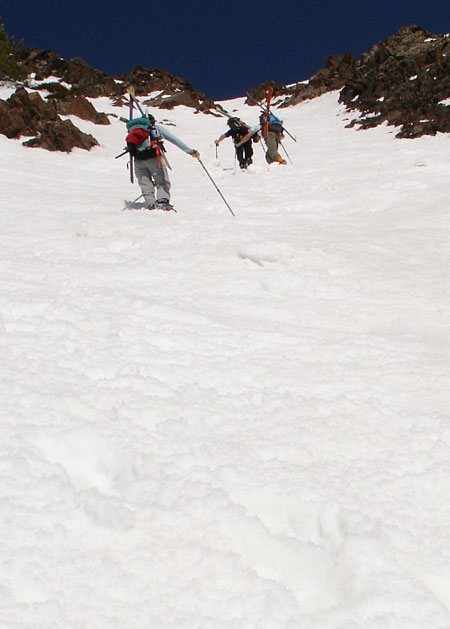

|
Saturday the 9th
Thaynes Canyon
Finally got a posse together to explore
thaynes Canyon and the infamous ski out directly to the Mill Creek
Inn. A ridge ascent that goes on forever, horrible breakable crusts
combined with indecipherable visibility and a ski out finish on paper
thin snow were some of
the highlights,
along with skiing somewhere completely new that we never got to see.
So bad I can't wait to go back.

Helmüt, Princess, and Fu. We were later joined by Swindler and some
enthusiastic old guy.
Saturday the 16th
Mount Superior South Side
Finally, the south side corned up and was
ready to rip. Powder Princess was excited to try out her new birthday
crampons on some early morning
ice, but by the time everyone was picked up and errands were
done, the snow was soft enough that we didn't really need them.
The middle apron was so strewn with ice nuggets that it felt more
like sumo wrestling than skiing, but the bottom apron had some
great, smooth corn for the tasting.

Powder Princess, Helmüt, and SomeGuy in the lead near the top of
Superior. |